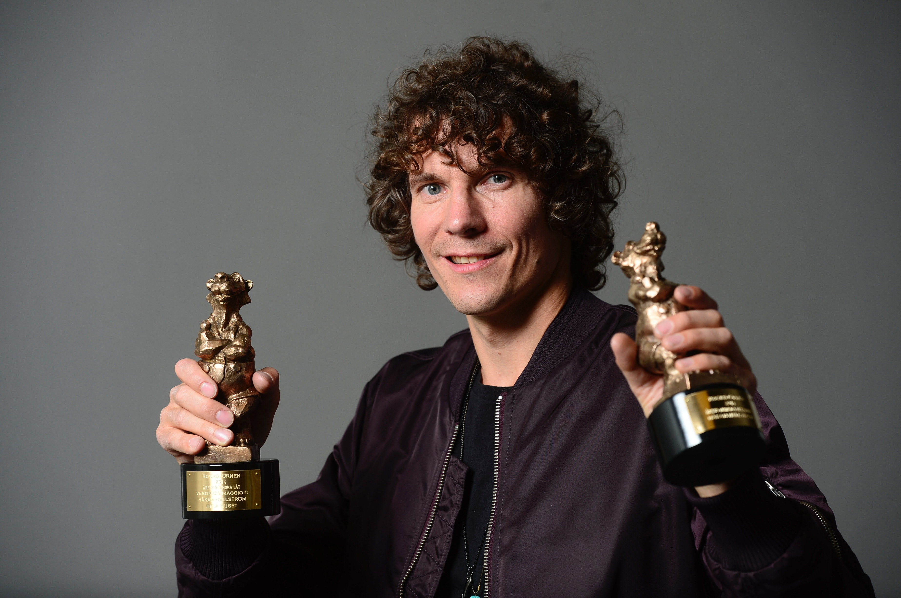
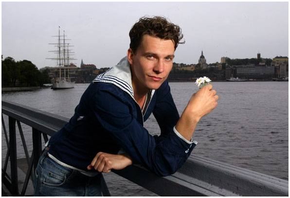
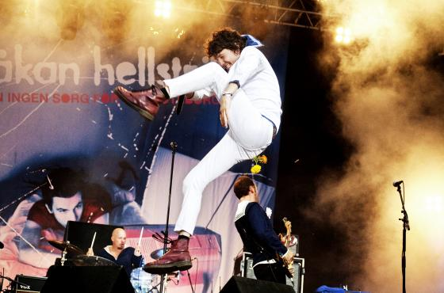
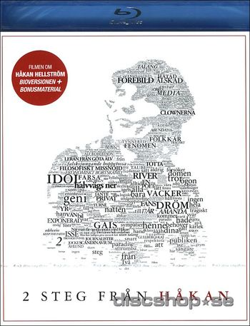
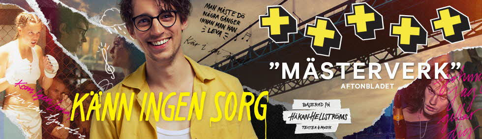
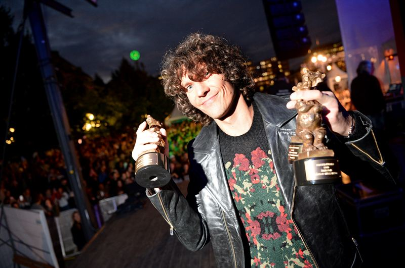
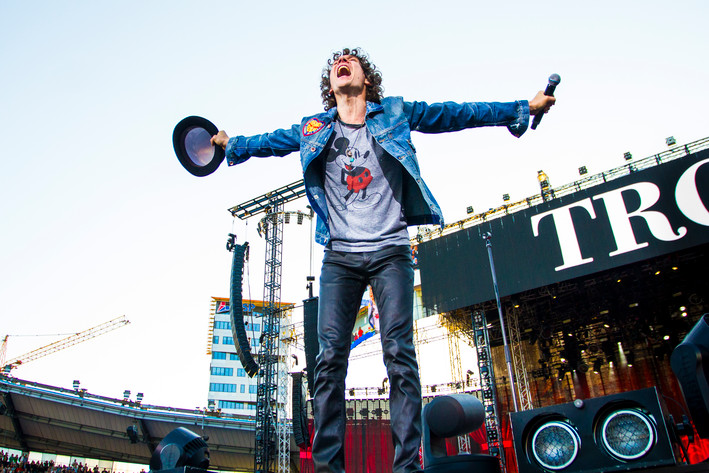
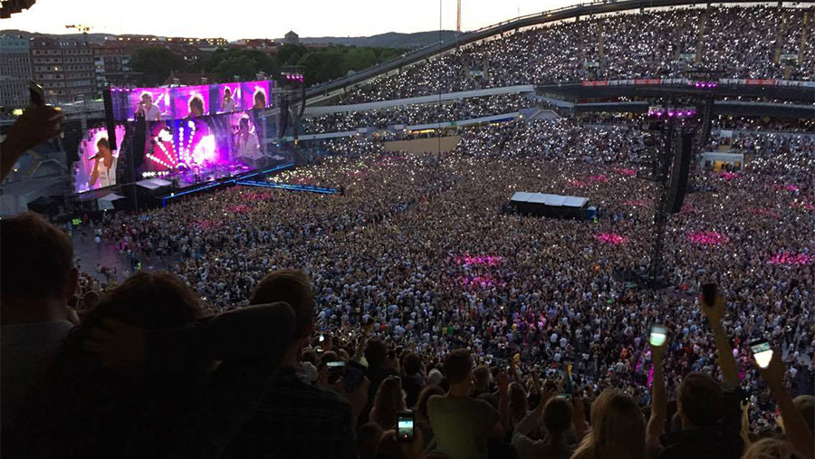
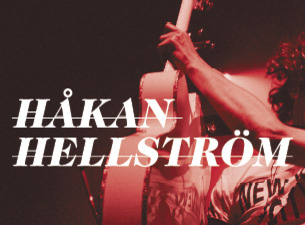
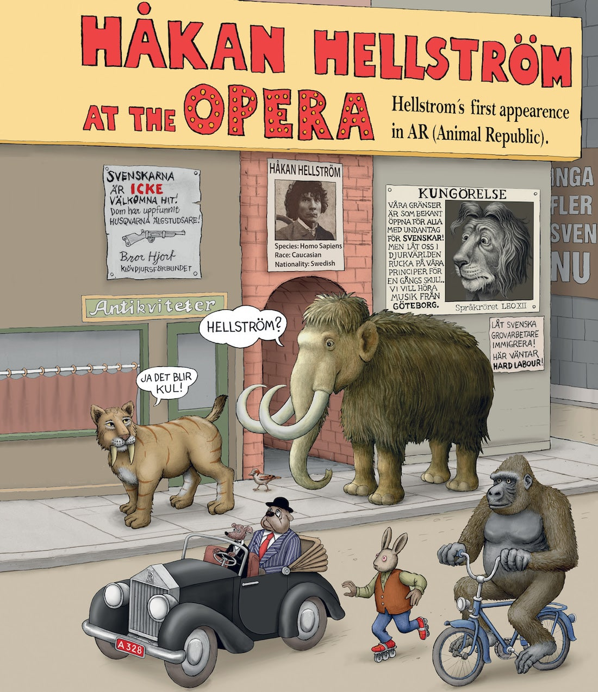

Rubrik
Håkan föddes 2 april 1974. Han växte upp i västra frölunda. Han var som 12 till 16 åring vänsterback i sitt favoritfotbollslag Gais. Han började sin solokarriär år 2000. Han var trummis i rockbandet Broder Daniel och var även med i ett band som hette Honey Is Cool innan han började spela helt själv. Hans första platta släpptes år 2000, Känn Ingen Sorg För Mig Göteborg.
Efter det fortsatte han glänsa och fick nominering i Årets Göteborgare år 2001. Motiveringen till detta var:
"Håkan Hellström har i år sjungit sig in i svenskarnas hjärtan och starkt bidragit till att skapa Popstad Göteborg. Hans artisteri är fyllt av glädje och musiken bygger på en göteborgsk vistradition i modern tappning. Håkan har med sin musik nått över generationsgränser och är som artist en första klassens ambassadör för det goda Göteborg och en värdig Årets Göteborgare 2001."
Håkan såg ut såhär i början av sin karriär.
Han släppte album efter album och blev mer och mer populär. 2006 fick han en grammis för årets bästa manliga artist. 2007 fick han årets Taubestipendium. Evert Taubes son Sven-Bertil Taube sa såhär om Håkans låtar:
"Vissa hävdar att han sjunger falskt, men han vet precis vad han gör. Håkan koncentrerar sig på det väsentliga, på glädjen och inlevelsen. Hans kärlek till visan är äkta - och det känner publiken i sitt hjärta."
2008 blev han årets bästa manliga soloartist. Han fick Guldmicken för årets bästa liveakt. Den delades ut i januari 2009.
2010 hade han en konsert på Way Out West i Slottskogsvallen där han spelade sitt debutalbum. Detta spelades även in och blev ett livealbum som nu finns på i tryckt form och på Spotify. Under våren och sommaren 2011 gjorde han en turné i Sverige, Norge och Danmark. Den 4 juni 2011 hade han en stor spelning i Slottskogsvallen, det kom 19 842 personer. Detta var då hans största spelning.
10 augusti 2011 var det premiär för dokumentären 2 steg från Håkan. Den handlar om hur det är att vara ett fan av Håkan och mediehysterin kring honom.
2012 gick han ut med att det skulle spelas in en film baserad på hans låttexter. Denna hade premiär i juli 2013. Huvudrollen skulle vara Adam Lundgren som skulle spela Pål. Håkan syntes på ett litet hörn där han var gästskådespelare.
På galan rockbjörnen 28 augusti 2013 tog han hem tre rockbjörnar. Årets konsert, Årets svenska låt och Årets manliga liveartist.
7 juni 2014 var det planerat att han skulle ha konsert i Slottskogsvallen men efterfrågan på biljetter var så högt att de fick flytta konserten till Ullevi istället. Det blev nordiskt publikrekord på 69 349 personer. Konserten spelades in och släpptes på bio och livealbum i december samma år.
4 och 5 juni 2016 hade han konsert på Ullevi igen. Det blev nordiskt publik rekord båda dagarna.
Eftersom att konserterna på Ullevi var så uppskattade gick Håkan någon månad efteråt ut med att det blir en vinterturné också. Detta ägade då rum i mindre arenor till skillnad från Ullevi. Han spelade i Scandinavium, Saab Arena i Linköping, Malmö Arena, Globen i Stockholm och Spektrum i Oslo.
Vinterturnén var i samband med det senaste albumsläppet. "Du gamla, du fria". Majoriteten av låtarna som är med på plattan spelades på konserterna.